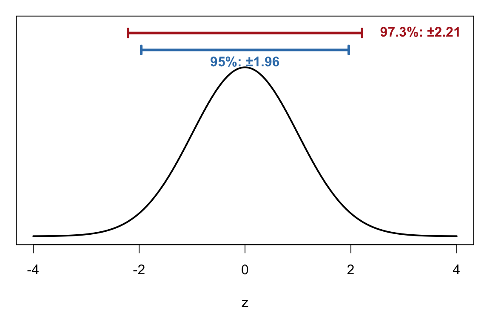
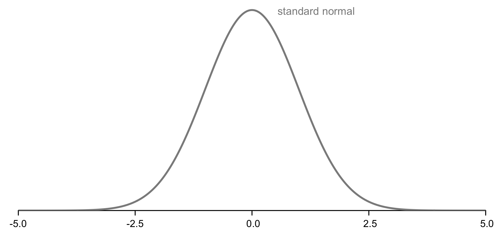
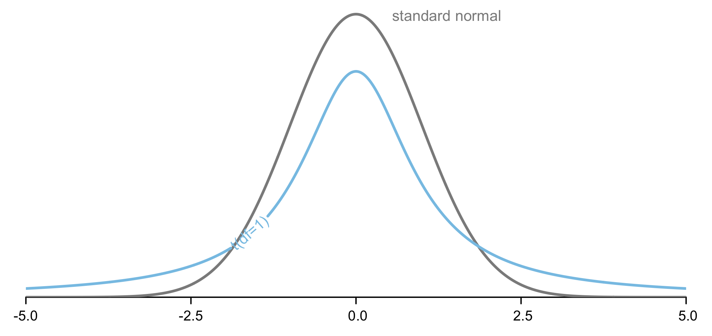
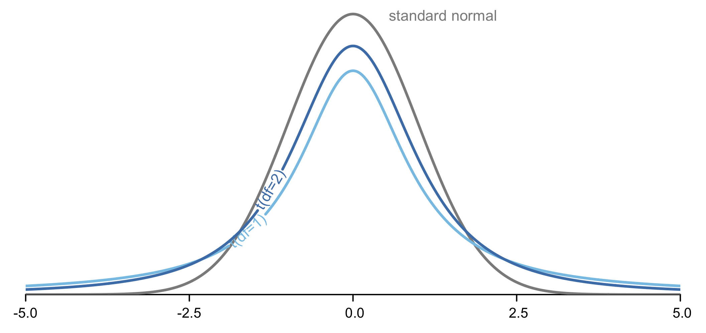
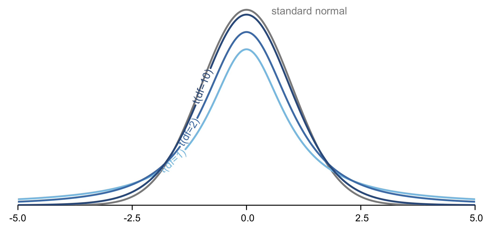
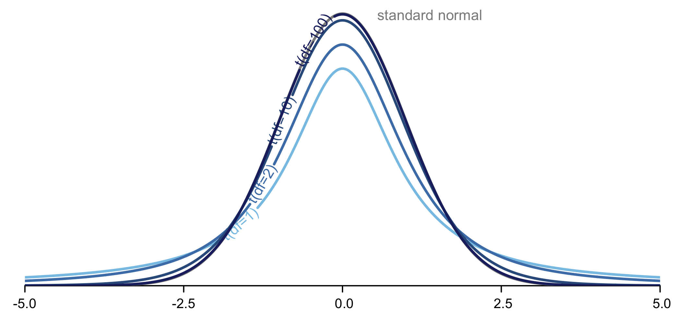

PSYC 2020-A01 / PSYC 6022-A01 | Lab 9
Learning objectives: R: computing CIs by hand, qt(), t.test(), Cohen’s d
Statistics: confidence level and width, CIs and NHST, the t-distribution, effect size
A confidence interval (CI) is a range of plausible values for the population mean \(\mu\), built around our sample mean
○ A 95% CI: if we repeated the study many times, 95% of the intervals built this way would contain \(\mu\)
○ It uses the same \(z\) cutoffs you already know
| Confidence level | \(\alpha\) | \(z\) cutoffs | R |
|---|---|---|---|
| 68% | .32 | ±1 | qnorm(.84) |
| 95% | .05 | ±1.96 | qnorm(.975) |
| 99% | .01 | ±2.58 | qnorm(.995) |
Confidence level = \(1 - \alpha\). Each tail gets \(\alpha / 2\), so the cutoff is qnorm(1 - alpha / 2)
Which interval is wider?
97.3%: to be more confident we catch \(\mu\), we need a wider net

\[\text{CI} = \bar{x} \pm z^{*} \times \frac{s}{\sqrt{n}}\]
○ \(\bar{x}\): the sample mean, the center of the interval
○ \(z^{*}\): the cutoff for our confidence level (1.96 for 95%)
○ \(s / \sqrt{n}\): the standard error
Lower bound \(= \bar{x} - z^{*} \times SE\) Upper bound \(= \bar{x} + z^{*} \times SE\)
ⓘ Why the minus? The lower cutoff is \(-1.96\), so \(\bar{x} + (-1.96) \times SE\) is the same as \(\bar{x} - 1.96 \times SE\)
95% CI for the mean petal length of iris flowers (built-in iris data)
We are 95% confident that the mean petal length of irises is between 3.48 and 4.04 cm
Simulate 100 studies from a population with \(\mu\) = 100, \(\sigma\) = 15, and build a 95% CI in each
Each line is one study’s CI. The blue line is the true \(\mu\)
About 95 of 100 intervals catch \(\mu\); the red ones miss
The 95% describes the method, not any one interval
Compute an 80% CI for the mean sepal length (iris$Sepal.Length)
Check: qnorm(.90) = 1.28 → CI ≈ [5.76, 5.93]. Narrower than a 95% CI would be
A 95% CI and a two-tailed test with \(\alpha\) = .05 always agree:
○ The CI excludes \(\mu_0\) → reject \(H_0\) (\(p\) < .05)
○ The CI includes \(\mu_0\) → fail to reject \(H_0\)
Example: someone claims the mean petal length is \(\mu_0\) = 3.3 cm
Our 95% CI is [3.48, 4.04]. Is 3.3 inside?
No → reject \(H_0\): the mean petal length differs from 3.3 cm
When we don’t know \(\sigma\) (almost always!), we estimate it with \(s\) and use the t-distribution
○ Bell-shaped and symmetric, but with thicker tails
○ Its shape depends on the degrees of freedom: \(df = n - 1\)
○ As \(df\) increases, it looks more and more like the standard normal (\(z\)) distribution
○ With \(df = \infty\), it is exactly the normal distribution, so with a large \(df\), \(t \approx z\)





qt() vs. qnorm()qt() works like qnorm(), but also needs the degrees of freedom
Thicker tails → a bigger cutoff with small samples
With large samples, the \(t\) cutoff is almost 1.96
pt() is the \(t\) version of pnorm()
Same idea as the \(z\)-test, but with \(s\) in place of \(\sigma\):
\[t = \frac{\bar{x} - \mu}{s / \sqrt{n}}, \qquad df = n - 1\]
R does every step for us with t.test():
○ x: the sample data
○ mu: the population mean under \(H_0\) (default 0)
○ alternative: "two.sided" (default), "less", or "greater"
t.test() Example: Highway MPGA researcher claims cars average 30 highway mpg. Test it with the 234 cars in mpg$hwy (we don’t know \(\sigma\)). One- or two-tailed?
t.test()What if the researcher had predicted, before looking, that cars get less than 30 mpg?
○ "less" → \(H_1\): \(\mu\) < 30 (lower tail)
○ "greater" → \(H_1\): \(\mu\) > 30 (upper tail)
The one-tailed \(p\) is half the two-tailed \(p\), and the CI becomes one-sided: (−Inf, 24.08]
○ Statistical significance: is there any difference?
○ Practical significance: how big is the difference?
With a big enough \(n\), even a tiny difference is significant, so we also report an effect size: the size of the effect, independent of sample size
\[d = \frac{\bar{x} - \mu}{s}\]
| \(|d|\) | Effect size |
|---|---|
| 0.2 | Small |
| 0.5 | Medium |
| 0.8 | Large |
ⓘ Unlike \(t\), there is no \(\sqrt{n}\): we divide by the SD, not the standard error. Cohen’s d is a description, not a test
ⓘ R’s built-in Cohen’s d functions are mostly for comparing two groups, so we compute the one-sample d by hand
\(d\) = −1.10: a large effect. Cars average about 1.1 SDs below the claimed 30 mpg
True or false?
○ Increasing the sample size increases the effect size: False
○ A larger difference between \(\bar{x}\) and \(\mu\) increases the effect size: True (it is the numerator)
Someone claims cars average 17 mpg in the city. Use mpg$cty (\(\alpha\) = .05, two-tailed)
Check: \(t\)(233) = −0.51, \(p\) = .61 → fail to reject \(H_0\); the CI [16.31, 17.41] includes 17; \(d\) = −0.03, a negligible effect
○ A CI = \(\bar{x} \pm\) cutoff × SE. Higher confidence → wider interval
○ A 95% CI that excludes \(\mu_0\) ↔︎ reject \(H_0\) in a two-tailed test at \(\alpha\) = .05
○ \(\sigma\) unknown → use \(s\) and the \(t\)-distribution (\(df = n - 1\)); qt() for cutoffs, t.test() for the whole test
○ Significance asks is there an effect?; Cohen’s \(d = (\bar{x} - \mu) / s\) asks how big? (.2 small, .5 medium, .8 large)